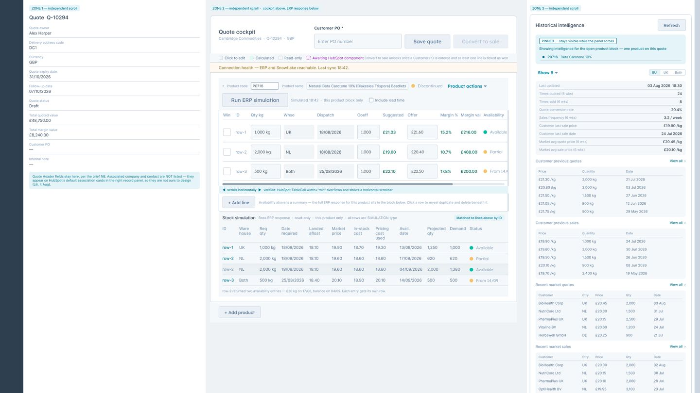
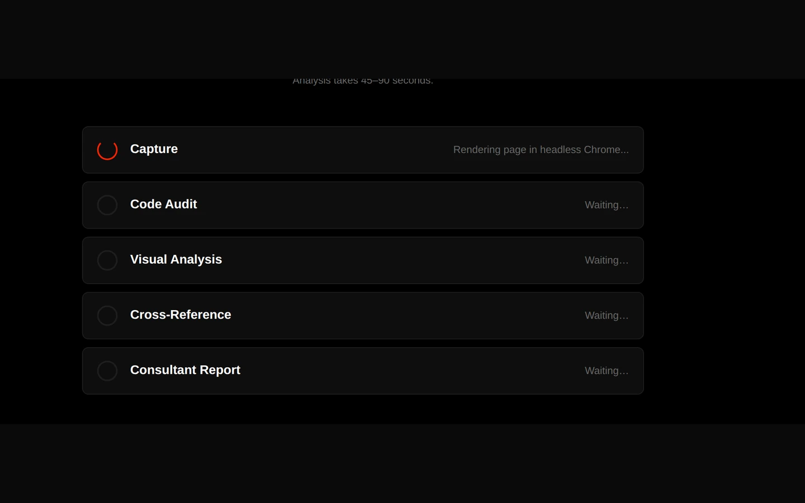
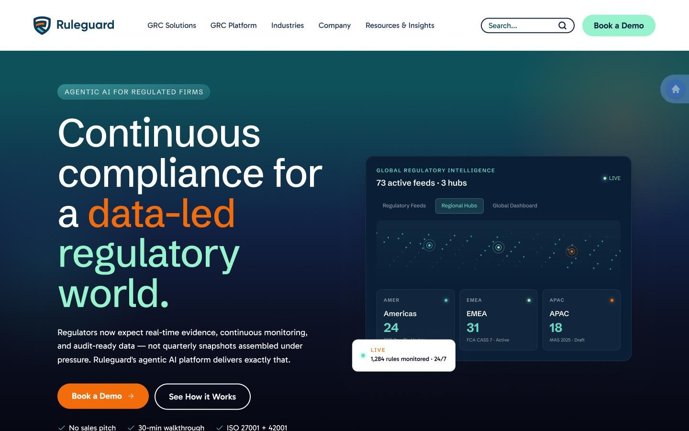
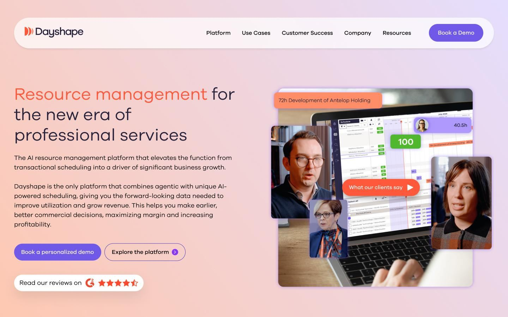
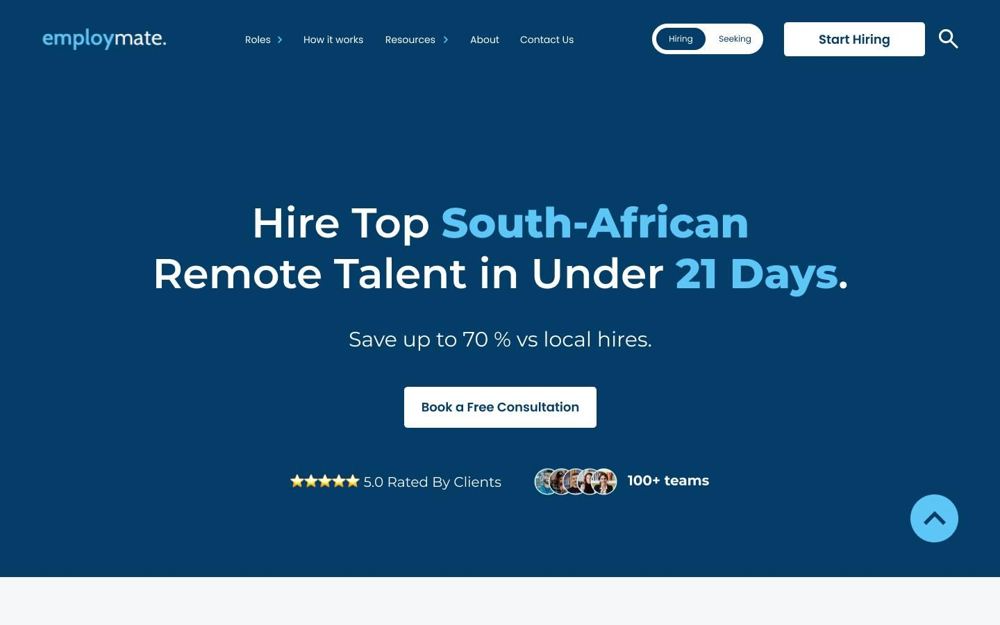

Sizo Manana
I design interfaces, then I prove they worked
Enterprise product design, full site systems and the interface craft underneath both. Six years in digital design, four of them in UX and UI, most of it inside B2B SaaS, fintech and financial services.
What makes the design defensible is that I own the measurement too. Most designers hand over before the numbers exist. I instrument the thing, capture a baseline, and come back sixty to ninety days later to check whether I was right.
- Enterprise and product UX
- Information architecture and wireframing
- Design systems and components
- Figma and interactive prototyping
- HubSpot UI extensions
- Theming and design tokens
- WCAG 2.1 AA
- GA4 and Tag Manager
- A/B testing, VWO and Convert
- Python, Playwright and self built tooling
Seven projects, and what each one is actually evidence of
Two are enterprise product design inside a CRM. Three are full site redesigns with the old state shown next to the new one. Two are the measurement and strategy work that most portfolios in this discipline leave out, because most people in this discipline do not produce it. One is an internal tool.
-

Enterprise product design
A quoting cockpit inside a platform that forbids CSS
43 frames covering a full CPQ lifecycle for a bulk ingredient supplier, designed entirely from a fixed component library with live ERP and warehouse data.
Read the case study
-

A tool I built, start to finish
A CRO audit engine that has to cite its sources
Five stages, from a headless browser render to a research backed report. The scores are computed in Python and never by a language model, deliberately.
Read the case study
-

Product design in HubSpot
Proving a spreadsheet could become a product
50 pricing rules lived in a client's spreadsheet. I designed the HubSpot feature that proved they could live in the CRM instead. It shipped, and I recorded the walkthrough.
Read the case study
-

Funnel work and measured outcome
Redesigning a funnel, and reporting it honestly
Desktop homepage to contact conversion went from 0.87 to 8.93 percent, 14 enquiries to 142. One of the four figures is much weaker than it looks and I show you why.
Read the case study
-

CRO and full site redesign
Rebuilding a compliance platform site around intent
A regtech site taken from award badges and abstract promises to a live regulatory intelligence hero, plus the strategy document where I disagreed with the client.
Read the case study
-

Design consulting and CRO
Redesigning around the number that was lying
Raw form completion read 11.6 percent. Segmented to the actual target customer it was 35 percent. That distinction changed the entire roadmap.
Read the case study
-

Brand and design system
Rebranding the agency I worked for, low fidelity to live
Wireframes to high fidelity to build, in light and dark, with a filter and search system, a mega menu, newsletters and landing page templates.
Read the case study
-

CRO and site redesign
Putting the offer in the headline
A recruitment site where the value proposition was buried below the fold. The rewrite put the country, the timeframe and the saving in the first sentence.
Read the case study
Two tracks, run together
The design decides what happens. The measurement decides whether I was right. Doing only the first is decoration. Doing only the second is commentary.
How I design it
- Understand the business model firstWho buys, what the page is for, and what a good outcome is worth. Design decisions are commercial decisions wearing a visual costume.
- Audit the current experience, and score itSix dimensions, scored, so the argument is about the scoring rather than about whose taste is better.
- Structure before stylingInformation architecture and low fidelity first. In wireframes nobody can object to a colour, so the conversation stays on hierarchy and sequence.
- Design the states, not the happy pathEmpty, loading, partial failure, rejection, permission. The states are where a user decides whether to trust the thing.
- Build it, or hand it over so it can be builtI implement 70 to 80 percent of my own work, which keeps the design honest about what is actually buildable.
How I know it landed
- Check whether the tracking is telling the truthIt usually is not. Form starts firing on page view is the single most common thing I inherit.
- Rebuild the instrumentation and capture a baselineGA4 and Google Tag Manager, event and parameter design, then sixty to ninety days of clean data.
- Segment before concludingA blended rate hides more than it shows. The Dayshape case study is entirely about this.
- Test where the traffic supports itVWO and Convert. Where volumes are too thin for a valid test, I say so instead of pretending.
- Come back and validate against the baselineIncluding the part of the movement that was measurement correction rather than behaviour change.
Conversion and analytics
- CRO strategy and roadmapping
- Heuristic audit and scoring
- Hypothesis design and prioritisation
- A/B testing in VWO and Convert
- GA4 and Google Tag Manager
- Microsoft Clarity, Looker Studio
- Funnel and drop off analysis
- Baseline capture and validation
Product and platform
- Enterprise and internal tool UX
- Complex B2B workflow design
- HubSpot UI extensions and app cards
- CPQ, configure price quote
- Design for React implementation
- Developer handover and annotation
- Failure and edge state design
Craft
- Figma, FigJam, interactive prototyping
- Design systems and component libraries
- Information architecture and user flows
- WCAG 2.1 AA, contrast auditing
- HTML, CSS, WordPress and Elementor
- Light and dark mode design
- Client workshops and presenting
About this page
It seemed fair to hold my own site to the standard I audit other people against, so here is what it does and why.
- No web fonts. The typefaces are whatever your device already has, so there is nothing to download and no invisible text while a font loads.
- No analytics, no cookies, no third party scripts. Nothing here tracks you. There is under three kilobytes of my own JavaScript, for the reading progress bar, the timeline, expanding long images and loading the one video. No third party ever runs.
- Every image ships its own dimensions, so the layout does not jump while the page loads, and everything below the fold is lazy loaded.
- Light and dark follow your system setting. Both were designed, not inverted. Three of the projects below shipped in both modes, so it would be odd if this page did not.
- It works on the keyboard. Visible focus rings, a skip link, semantic headings, real alt text, and it respects a reduced motion preference.
- Static HTML and CSS, hosted free. No framework, no build step, no server. About 20 kilobytes of CSS for the whole site.